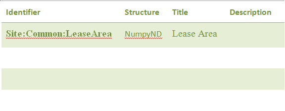
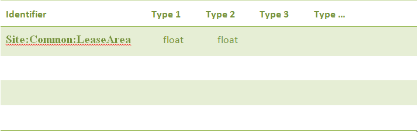

9. Data Structures¶
9.1. Introduction¶
A significant portion of the functionality of the DTOcean software is dedicated to the storage, delivery and manipulation of data. The system (particularly the underlying Aneris framework) is designed to provide flexible but precise definitions of all the data handled within the system. The definition of this data is given in an item known as the Data Definition Specification (DDS), which provides a collection of metadata unique to the system being developed.
This metadata is provided in the form of fields and records, with each record referring to a single encapsulated data item. The fields are configurable for the needs of the system and those necessary for DTOcean are detailed here. A default field required by the Aneris framework is called “structure”. The structure field relates to the format of the data as it will be stored within the software. A clear understanding of the format of the data is vital for delivering it to the modules, but it can also provide the means to automatically create charts for the data, store the data on a local hard disk or retrieve data from a database. The majority of structures used in DTOcean are described here.
Throughout development of the DTOcean software, agreement of the format of various items of data has been vital for the successful coupling of the modules and themes. Although format conversions can be achieved within the interfaces between the core and the modules, if the essence of data is not consistent then an incompatibility can occur. Such problems can occur, for instance, when the needs of a module are not supplied by a module which has run previously or where the resolutions of certain data items do not match between different modules. A case study for resolving these types of challenge is also given.
9.2. Data Specification¶
The following fields are used to describe each data member within the DTOcean tool. The definition is split into 3 sections, a model section which describes the technical information for use within the core. The second section is the description section, which provides real details about the data to aid the user identify and use the data member effectively. Finally, the validation section contains data about valid values that the data can take, should this be appropriate.
9.2.1. Model Fields¶
- Identifier: A unique identifier for the data
- Structure: The data storage class to be used
- Types: A list of data type can also be specified which may be used within the data structure
- Tables: List of database tables & columns used as an interface to the data.
9.2.2. Description Fields¶
- Title: The title of the data (also used for handles and plot titles)
- Description: A longer description of the data
- Labels: List of names for labels within the data such as for axes or table column headers
- Units: List of SI units of the data and / or axes etc.
9.2.3. Validation Fields¶
- Valid Values: List of valid values for discrete data
The primary format for the specification is YAML, defining a list of dictionaries like so:
---
- description: The current velocity at which the tidal device rotor begins to turn.
identifier: device.cut_in_velocity
structure: SimpleDataColumn
tables:
- project_device
- cut_in_velocity
title: Tidal Turbine Cut-In Velocity
types:
- float
units:
- m/s
It is also possible to convert an excel spreadsheet to the yaml format, when the first column headings match the definition fields as show below:
Additionally, values with list entries can be added as additional sheets. For instance the “Types” sheet might define float types in two dimensions:
9.3. Data Formats¶
This section describes the currently defined data formats available within the DTOcean core. These formats must correspond to the “structure” field of the data specification. Some requirements for specifying raw data for these structures is given. Also, a description of the automatic plot which can be viewed of these structures (where a plot is appropriate) is also described:
UnknownData
Description: This is for data where the structure is unknown and can act as a place holder until a more appropriate structure is chosen or defined
Validation: None
Plots: None
DateTimeData
Description: A single datetime.datetime object which records a date and time
Validation: A datetime.datatime object must be given for initialisation
Plots: None
SeriesData
Description: A pandas.Series object which records the evolution of a single variable against an (arbitrary) index
Validation: A list like object must be given for initialisation. An optional label and unit can be given for dependant variable
Plots: A basic line plot (pd.Series.plot) where the label and unit are optionally added to the y-axis
TimeSeries
Description: A pandas.Series object which records the evolution of a single variable against an datetime index
Validation: A list of tuples must be given for initialisation where the first index is a datetime.datetime (like) object and the second index is the value for that time. An optional label and unit can be given for dependant variable
Plots: A line plot (pd.Series.plot) with the date / time on the x-axis and where the label and unit are optionally added to the y-axis
TableData
Description: A pandas.DataFrame object on an arbitrary index with an arbitrary number of columns
Validation: Any data which will initialise a pandas DataFrame can be used to initialise the structure. Validation of the column headers using the “labels” metadata is planned but not yet implemented.
Plots: None
IndexTable
Description: A pandas.DataFrame object on using a shared index with an arbitrary number of columns. In this case the index would normally be textual.
Validation: Any data which will initialise a pandas DataFrame can be used to initialise the structure. The first label must include the column to be used as the index.
Plots: None
LineTable
Description: A pandas.DataFrame object on using a shared index with an arbitrary number of columns. In this case the index should be numerical.
Validation: Any data which will initialise a pandas DataFrame can be used to initialise the structure. The first label must include the column to be used as the index.
Plots: Multiple lines on a shared axis (pandas.DataFrame.plot). The label is known for the x-axis (the index) and optional units can be given. The column headings can be used to provide a legend for the plot, with optional units.
TimeTable
Description: A pandas.DataFrame object an using a date / time index with an arbitrary number of columns
Validation: Any data which will initialise a pandas DataFrame can be used to initialise the structure. A column with the heading “DateTime” must be given within the raw data.
Plots: Multiple lines on a shared axis (pandas.DataFrame.plot). The label is known for the x-axis (the datetime index) . The column headings can be used to provide a legend for the plot, with optional units.
NumpyND
Description: A general numpy.ndarray object. This class provides a base class for other derived structures and cannot be used directly
Validation: None
Plots: None
Numpy2D
Description: A numpy.ndarray with 2 dimensions.
Validation: The shape of the raw data must match the requirements of the structure
Plots: None
Numpy3D
Description: A numpy.ndarray with 3 dimensions.
Validation: The shape of the raw data must match the requirements of the structure
Plots: None
NumpyLine
Description: A numpy.ndarray with 2 dimensions and the second dimension having value 2. This structure represents a line with and x and y points being in the columns of the given data.
Validation: The shape of the raw data must match the requirements of the structure
Plots: A line plot using the 0 index column for the x-axis and the 1 index column for the y-axis. Labels and units for the axes can be optionally given.
NumpyLineDict
Description: A dictionary of ‘numpy.ndarray’s with 2 dimensions and the second dimension having value 2. This structure represents a group of lines on the same set of axes.
Validation: A dictionary must be given and the shape of the dictionary values must match the requirements of the NumpyLine structure
Plots: Similar to the LineTable plot the group of lines is plotted on a shared set of axes. The legend of the plot uses the dictionary keys to label the lines. Optional labels and units can be supplied for the axes.
NumpyBar
Description: Same as NumpyLine except the data represent discrete points, rather than a continuous variable
Validation: See NumpyLine
Plots: None
Histogram
Description: Data which is stored in variable width bins. Note, the bin height need not be the frequency (i.e. an integer) as probability densities can also be stored in this structure.
Validation: To initialise this structure a tuple must be given where the first entry is a list of the bin values and the second entry is a list of the bin extents. The length of the bin extents should be one entry longer than the bin values.
Plots: This plot plots the bins as blocks. Optional labels and units can be supplied for the x and y axes.
HistogramDict
Description: A dictionary of histograms which share an axes
Validation: To initialise this structure a dictionary of tuples should be given. The tuples must match the validation required for the Histogram structure.
Plots: Similar to the histogram plot, but the block space is shared between the dictionary keys.
CartesianData
Description: A point on Cartesian axes in 2 or 3 dimensions. This data is not georeferenced.
Validation: A list like structure with 2 or 3 entries is required for initialisation
Plots: A plot of the point relative to (0,0)
CartesianList
Description: A list of points on Cartesian axes in 2 or 3 dimensions. This data is not georeferenced.
Validation: A nested list like structure with 2 or 3 entries for the inner dimension is required for initialisation. The outer dimension can have any length
Plots: A plot of all the points relative to (0,0)
CartesianDict
Description: A dictionary of points on Cartesian axes in 2 or 3 dimensions. This data is not georeferenced.
Validation: A dictionary of list like structure with 2 or 3 entries for each value is required for initialisation.
Plots: A plot of all the points relative to (0,0). A label with the dictionary key is placed by the point.
CartesianListDict
Description: A dictionary of CartesianList structures. This data is not georeferenced.
Validation: A dictionary of structures valid for CartesianList.
Plots: None
SimpleData
Description: A singleton piece of data with a built in python type.
Validation: Any raw data can be entered but it must validate with the given type value
Plots: None
SimpleList
Description: A list of data with a built in python type.
Validation: A list containing any raw data can be entered but the list entries must validate with the given type value
Plots: None
SimpleDict
Description: A dictionary of data with a built in python type.
Validation: A dictionary containing any raw data can be entered but the dictionary values must validate with the given type value
Plots: Bar chart plot with keys on x-axis and values with optional labels and units on y-axis.
SimplePie
Description: See SimpleDict
Validation: See SimpleDict
Plots: Pie chart plot with keys on segments
PointData
Description: A georeferenced shapely.geometry.Point object in 2 or 3 dimensions.
Validation: A list like structure with 2 or 3 numbers is required.
Plots: Point displayed in UTM map axes
PointList
Description: A list of georeferenced shapely.geometry.Point objects in 2 or 3 dimentsions.
Validation: A list of list like structure with 2 or 3 numbers is required.
Plots: The group of points displayed in UTM map axes
PointDict
Description: A dictionary of georeferenced shapely.geometry.Point objects in 2 or 3 dimentsions. See the same issue as PointData.
Validation: A dictionary containing values that are list like structure with 2 or 3 numbers
Plots: The group of points can be plotted in UTM map axes using the dictionary keys as labels.
PolygonData
Description: A georeferenced shapely.geometry.Polygon object in 2 or 3 dimensions.
Validation: A list of list like structures with 2 or 3 numbers is required where each point represents a vertex of the polygon. The first point in the list is also considered to be the last point, i.e. it does not need to be repeated.
Plots: Polygon displayed in UTM map axes.
PolygonList
Description: A list of georeferenced shapely.geometry.Polygon object in 2 or 3 dimensions.
Validation: A list of polygon definitions as per the PolygonData structure
Plots: The group of polygons can displayed in UTM map axes.
PolygonDict
Description: A dictionary of georeferenced shapely.geometry.Polygon object in 2 or 3 dimensions
Validation: A dictionary of polygon definitions as per the PolygonData structure
Plots: The group of polygons displayed in UTM map axes with a label for each polygon using the dictionary keys.
XGridND
Description: A general xarray.DataArray object. This structure is used as a base class for other structures based on DataArrays.
Validation: None
Plots: None
XGrid2D
Description: A xarray.DataArray object with 2 dimensions.
Validation: To initialise the structure a dictionary must be passed with the keys “values” and “coords”. The values key are the values for the structure having the desired shape (numpy array or list like). The coord key contains a list of lists where each list contains the coordinates. The length of each list must match the length of the dimension of the data in the “values” key. A label must also be set for each dimension with optional units and the data itself (i.e. the length of the units must equal the length of the number of dimensions plus one).
Plots: xarray.DataArray.plot produces a surface plot of the data
XGrid3D
Description: A xarray.DataArray object with 3 dimensions.
Validation: See XGrid2D
Plots: None
XSetND
Description: A general xarray.Dataset object. This structure is used as a base class for other structures based on Datasets.
Validation: None
Plots: None
XSet2D
Description: A xarray.Dataset object with each set having 2 dimensions.
Validation: To initialise the structure a dictionary must be passed with the keys “values” and “coords”. The values key contains another dictionary with keys giving the dataset name and each value being the associated data. This data should have the desired shape (as a numpy array or list like) and every value of the dictionary should have the same shape. The coord key contains a list of lists where each list contains the coordinates. The length of each list must match the length of the dimension of the data in the “values” key. A label must also be set for each dimension with optional units and the data itself (i.e. the length of the units must equal the length of the number of dimensions plus one).
Plots: A plot with a sub-axes for each dataset showing a surface plot of the data
XSet3D
Description: A xarray.Dataset object with each set having 3 dimensions.
Validation: See XSet2D
Plots: None
Strata
Description: A subclass of XSet3D for storing bathymetric layers.
Validation: Currently has similar validation to XSet3D, but the raw data should have the “values” key with “depth” and “sediment” in the subdictionary, the first two sets of coordinates should be monotonic and the last should be a list of strings with format “layer #” where # is the layer number starting from one. Note, this check is not yet implemented.
Plots: A plot of the bathymetry can be provided using the “layer 1” key of the depth matrix.
Network
Description: A series of nested dictionaries that represent the electrical or moorings networks
Validation: The only main validation right now is that the top level dictionary should have two keys: “nodes”, which refers to the “BOM” dictionary format and “topology” which refers to the hierarchy format.
Plots: A plot of the network nodes and edges in a network diagram.
RecommendationDict
Description: A dictionary for containing recommendations from the Environmental module
Validation: The top level keys of the structure should match the content of the labels key in the DDS metadata and be from a subset of valid values (which I need to list here). The next level dictionary should always have keys: “Generic Explanation”, General Recommendation” and “Detailed Recommendation”.
Plots: None
9.4. Case Studies: Bathymetry Data Structure¶
This section details some case studies undertaken to form a common understanding of some data requirements and structures which would be shared among the modules.
The first two subsections present definitions of the offshore bathymetry data structure in plan view. This was divided into two areas: the lease area and the export cable corridor. The discussion was undertaken as the Electrical Sub-Systems module required a more explicit definition of the grid layout of the lease area bathymetry, and as there were no definitions for the bathymetry relating to electrical export cable corridors.
Following the results of bathymetric structure discussion, it became clear that a second study was required to discuss the definitions below the sea bottom. Thus, the final subsection addresses the question of provision and storage of geological data values for the software.
9.4.1. Lease Area¶
The following decisions were made regarding the lease area bathymetry:
1. The core bathymetry data structure is to be modified to include an index, as shown in Table 8.3 and illustrated in Figure 8.1. This will allow adjacency to be determined in the Electrical Sub-Systems module:
- This index is based on a 2D array (i,j)
- The index will be sequential and follow the English reading order (see (“Esri grid,” 2015)) i.e. “left-right and top-bottom”
- The data will be pre-processed in the core to map this array. The most northerly, easterly, southerly and westerly points will be identified and used to define the array dimensions
- During this process, the area around the lease area could be padded with temporary grid points, if necessary, to create a well dimensioned array. These temporary points would not be stored in the database
- An origin (0,0) may not exist
- The DTOcean software should be able to accept equidistant projections indicated by a formatted string (having the proj4 format (https://trac.osgeo.org/proj/):
- This will have no impact on the data structure passed to individual modules
- It should be the responsibility of the user to prepare a correctly formatted digital terrain map (DTM) which uses the given projection
- A string will be stored in the SITE table
- Provision for scarcity of data should be included in all WP modules:
- Bathymetry data (x,y,z) is the minimum user input data requirement
- Geotechnical surveying is likely to occur at a later stage of project development so may not be readily available
- The core will provide data only for points which are True, i.e. it will not provide a predomi- nantly empty structure of NaNs
- Note, this interpretation conflicts with the interpretation of (at least) WP2
- Any data interpolation should be performed by the user prior to running the DTOcean software, although this does not imply all grid points need values apart from the bathymetry
Fig. 9.1 Bathymetry data structure and sample data
Fig. 9.2 Example of lease area indexing.
9.4.2. Export Cable Corridor¶
Fig. 9.3 Cable corridor data structure
and sample data The following decisions were made regarding the export cable corridor bathymetry:
- This is defined as a separate data table within the database such as Table 8.4:
- Generally, the structure will be similar to that of the lease area definitions
- As the sole user, this may be tailored to the Electrical Sub-Systems module data requirements, i.e. less geotechnical data is required for this zone
- The resolution of the export cable corridor can be lower than the lease area. The minimum requirement is to contain at least two points:
- the cable landing point
- another overlapping with the lease area
- The cable corridor will have the same projection as the lease area
- Gradient changes are one of the main constraints within the cable routing process and should be exposed to the user, i.e. the software should afford the user the chance to modify this parameter
9.4.3. Geological Data Requirements¶
First Approximation
The minimum level of data that would be needed throughout the software would be the specification of a single soil type for the entire site of interest. This soil type could then be mapped to a series of reference values within the database as required for each module. For example:
Single Layer Specification
Given the apparent availability of complete (if not coarse) public information for the top layer soil type of large areas of seabed it seems appropriate to ask the user to provide a single soil type definition for each point of the grid. An example of how this might be presented is shown in Table 8.5.
Fig. 9.5 Single layer bathymetry data structure and sample data
Here, “Layer Start” represents the top of the layer (effectively the depth – which is now redundant) and the layer is assumed to be of infinite depth.
Multi-Layer Specification
Extending the above definition to multiple layers is trivial: only additional columns are needed to specify the number of layers that are known. The last known layer is then considered to have infinite depth. Layer one must always be fully specified.
Fig. 9.6 Multiple layer bathymetry data structure and sample data
Within the core, the this information is stored in a NetCDF like structure (xarray DataSet), one array is used for the layer start depths and one for the layer types. Nonetheless, it will be easy to “unroll” this data into a table like Table 8.6, for the purposes of the modules (i.e. a pandas table with the above columns).
As a result of this implementation, each point of the grid will not have necessary the same number of layers and also their thickness is variable.